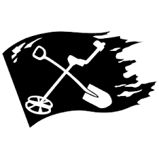
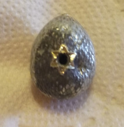
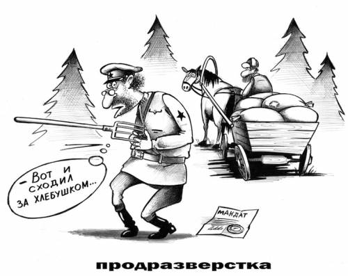

Отряды энтузиастов малыми группами и в одиночку зондируют поля, пустоши, урочища, заброшенные усадьбы в поисках кладов, древних монет, изделий из драгметаллов. Возрос интерес к старинным картам. Взрываются тонны земли в местах давно оставленных людьми. И небезуспешно. Новгородская земля хранит в себе много удивительных исторических артефактов, начиная с образования древнерусского государства. И до него. Люди начали осваивать северо-запад нашей страны около шести тысяч лет назад, двигаясь за отступающим ледником.
Места находок малопредсказуемы, проследить логику появления предметов в конкретном месте невозможно, зато появляется широкое простанство для фантазий. Например, находятся горстями монеты XIV века посреди "белого" поля, или медальон с золотой звездой Давида в конце необъятной дали на окраине леса.
Очень много следов Второй мировой войны, но они, как правило, интереса для поисков не представляют. Однако, есть случаи, когда поиск клада оборачивается обнаружением останков солдат с последующим восстановлением личности и захоронением с воинскими почестями. Примером такого уважительного отношения к павшим служит захоронение на перекрестье Терпилицкого шоссе и дороги на Поддубье, организованное в наши дни.
Много разговоров по поводу запретительных законов, объявляющих поверхностный слой почвы "культурным слоем", а поисковиков расхитителями этого слоя. Поскольку сам к этому увлечению равнодушен, подробностей законодательства не знаю, но согласно такой логике, кольцо оброненное в выгребную яму должно рассматриваться как содержание культурного слоя и извлечение его от туда противозаконно. Раз, уж, угодило в "культурный слой".
Наоборот, только в наши дни, в связи с техническим развитием, появился допуск к содержанию земли в отношении предметов, которые скрывали столетия. Вспыхнул интерес к собственной истории и ее уважение.
В Ингерманландии поиск в любом месте может дать неожиданные результаты.
Количество любителей увеличивается, а количество находок не уменьшается. Каждый год тракторами поднимаются новые "исторические пласты".
В дальнем конце нашего поля, только трактор проезжает три раза в год, был найден медальон размером с ноготь. На нем - шестиконечная звезда.
Подними ладонь, останавливая трактор, и спроси у тракториста, что ему известно о деятельности семитов на данном поле? Когда гражданин поднимет отвисшую челюсть, перекрестится.

Каким образом такой артефакт оказался в таком месте можно фантазировать вволю. Например, в результате инцидента приведенного на картинке.
